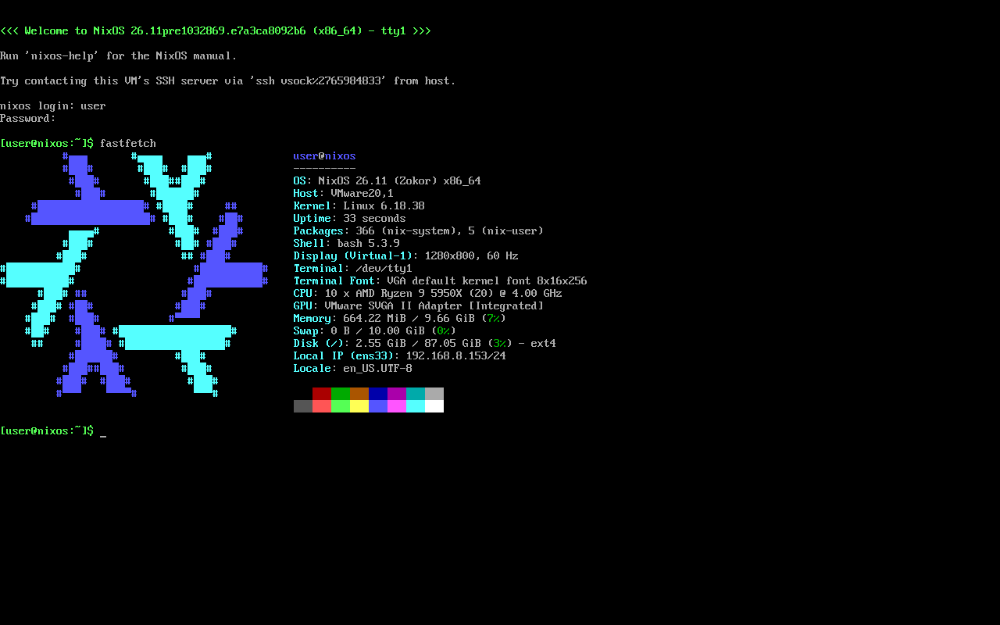

我在搜索“Full Source bootstrap”时，看到了一个网友实现了NixOS的自举，并且作为他的学士论文。我在最近也试了，发现不行，并不能自举。原因是某些依赖的CVE补丁下载不到了，然而他的脚本有SHA256和MD5码的校验，我也没法随便改。
我了解了一下NixOS，发现这个系统确实了不得，但是比LFS都难上手。
NixOS的优缺点
它的优点也是很吸引我的，就是一个配置文件就能复现整个系统。
NixOS跟安装二进制包的gentoo相比较，但是兼容性更好，软件更多。它既编译软件，又节省了时间。
迁移实例的繁琐流程
本博客建立的初衷是什么？就是为了记录我的长毛象魔改、配置、安全维护和迁移。每次我发现性价比更高的VPS，或者我的VPS因为各种原因，就比如被投诉、系统缩缸、机房失火、病毒和黑客入侵而炸服。又或者我乱折腾，而服务器没有快照，需要迁移或恢复。这时候就很麻烦。
如果我要迁移，那么我得找个不加班的双休日，重装一遍新服务器，设置密钥，配置fail2ban，配置邮件服务器，配置防火墙，安装依赖，安装Cloudflare前置代理，安装Elasticsearch，安装长毛象，迁移数据，编译长毛象，配置端口，生成证书，配置计划任务，安装CVE补丁，进行安全测试。
如果我的实例炸了，那么我得找下一个VPS，找到以后，又得找个时间，重装一遍新服务器，设置密钥，配置fail2ban，配置邮件服务器，配置防火墙，安装依赖，安装Cloudflare前置代理，安装Elasticsearch，安装长毛象，从备份拉取数据，编译长毛象，配置端口，生成证书，配置计划任务，安装CVE补丁，进行安全测试。
这么有趣，想想就来劲🙂。
NixOS长毛象的迁移或恢复流程
如果我把长毛象部署在NixOS上呢？那么，以上步骤就简化为了，安装NixOS服务器（安装Nix，上传配置文件），重启服务器，进行安全测试。就完事了😃
当然，长毛象我应该还要手动部署，也可以自动部署，但是没有灵活性了。
由此可见，可以简化很多迁移实例的步骤。
NixOS的缺点
缺点也很明显，为啥我到现在也没让长毛象用上NixOS？因为学习曲线陡峭嘛。
NixOS不符合FHS标准，从不乖乖把软件和库放在/usr/bin和/usr/lib里。因此，我没办法像上一篇那样手动安装软件，只能通过包管理器来安装。完全没有灵活性可言。
前提条件
- 完成live-bootstrap的编译。不需要两块硬盘，既能原地安装，又能安装到别的盘。
- 安装启动dropbear
前作的x86_64内核不需要，因为它并不能帮你成功安装NixOS。接下来你需要使用Nix来编译新版Linux内核，旧版4.14内核不需要了。
本文对于live-bootstrap的版本和nix-channel的版本也没有特别的要求，短期内完全不必担心有依赖下架、有功能废除导致无法复现的问题！
编译新版Linux的64位内核
live-bootstrap的内核不仅只有32位，版本还特别老，已经不受支持了，但是不用担心，你可以用Nix来交叉编译一个符合要求的内核！
安装Nix
根据官网教程，安装最新版的Nix
1 | curl --proto '=https' --tlsv1.2 -L https://nixos.org/nix/install | sh -s -- --daemon |
亲测可安装成功
在root账户下，运行以下指令即可使用nix
1 | . $HOME/.nix-profile/etc/profile.d/nix.sh |
编译Linux
live-bootstrap的内核，具有版本低、没模块、没initramfs等缺点，甚至无法使用make menuconfig，ncurses的依赖也装不上！如果你贸然升级内核，那面临的只有编译失败。
但是不用担心，nix早已帮你解决了这个问题！
首先，我建议给Linux新建一个目录（可选）。不新建问题也不大，因为本步骤就没几个文件。
准备default.nix
nix-build编译软件都需要一个.nix文件。本教程仅需这一个default.nix文件。可以点击这里下载
点击这里展开代码
1 | { pkgs ? import <nixpkgs> { system = "i686-linux"; } }: |
将它导入live-bootstrap系统后，在它所在的目录，拷入当前内核的配置文件并重命名为config。
你既可以拷备用的内核配置文件过来，如果实在没有备用的内核配置文件，用如下命令导入
1 | zcat /proc/config.gz > config |
正式开始交叉编译
在内核文件config和default.nix所在的目录中，执行如下命令
1 | nix-build -v --log-format bar-with-logs |
上文default.nix文件，大致意思为执行交叉编译（并且下载或编译所有工具链所需的软件），读取config文件，根据它来进行配置。所有新版本所增加的配置，RUST都选no，需要模块的也都选no，其余默认。
最终会编译出一个，版本最新的（6开头的，不是7.1.2），64位的，没有initramfs和模块从而跟live-bootstrap兼容的内核。
由于没有内核，它不会生成result连接，你只能去报错提示的目录寻找bzImage文件，并将它拷贝并改名：/boot/vmlinuz64
安装并启用新内核
执行如下命令安装内核
1 | if ! grep -q "vmlinuz64" /boot/grub/grub.cfg; then |
重启后，执行uname -a查看内核。
执行原地安装
卸载nix
重启后，根据官方教程https://nix.dev/manual/nix/2.34/installation/uninstall.html 卸载nix。
因为，刚才安装的nix是i686架构的，它无法安装x86_64的NixOS系统
1 | rm -rf /etc/nix /etc/profile.d/nix.sh /etc/tmpfiles.d/nix-daemon.conf /nix ~/.local/share/nix ~/.local/state/nix ~/.cache/nix ~/.nix-defexpr ~/.nix-profile ~/.nix-channels ~root/.nix-channels ~root/.nix-defexpr ~root/.nix-profile ~root/.cache/nix |
去掉sudo，因为会报错。
安装x86_64架构的nix
步骤跟原来一样，它会根据内核架构来调整nix的架构
1 | curl --proto '=https' --tlsv1.2 -L https://nixos.org/nix/install | sh -s -- --daemon |
切换nix-channel
将nix-channel切换位nixos
1 | nix-channel --add https://channels.nixos.org/nixos-unstable nixpkgs |
其中unstable可以改为相应的稳定版本。由于本文不使用已被废除的NIXOS_LUSTRATE，所以可以使用unstable。
然后记得运行
1 | nix-channel --update |
构建NixOS安装程序，通过kexec安装系统
如果你没有配置文件需要使用，那么无需为此步骤创建新目录。
直接执行
1 | nix-build -A kexec.x86_64-linux '<nixpkgs/nixos/release.nix>' |
需要等待较长时间。也需要大量系统资源来构建一个临时的NixOS
目前的内核组件太少，没有编译所需的部件，因此官方教程仅有此方法能进行安装。
或者降级到26.05之前构建toplevel，使用已被废除的
NIXOS_LUSTRATE来执行原地安装。并且只能通过热启动/boot/vmlinuz64来完成转换。
编译完成后，cd result进入编译好的目录，执行
1 | ./kexec-boot |
这时，马上就进入了类似安装盘的界面，所有硬盘都变为未挂载的状态。
安装NixOS
此时步骤就跟使用安装盘一样了。你可以cfdisk -z来格式化全盘，也可以cfdisk /dev/sdb来给其他硬盘安装NixOS。
在此不再赘述安装过程，详见官网和其他教程。
完全可以在BIOS启动的环境下安装UEFI启动的系统。
可逆替代安装
此时，你不要用cfdisk或fdisk来格式化硬盘，直接挂载到/mnt。然后进入挂载目录，运行
1 | mkdir old-root |
然后再运行
1 | nixos-generate-config --root /mnt |
按照官方教程继续安装。
如果不把旧系统的文件全都移入备份目录，那么本次安装将会失败，旧数据也会损坏。
回滚nixos的可逆原地安装，也跟官方教程一样，需要使用其他安装盘来进行恢复。
安装成功后，如图所示
